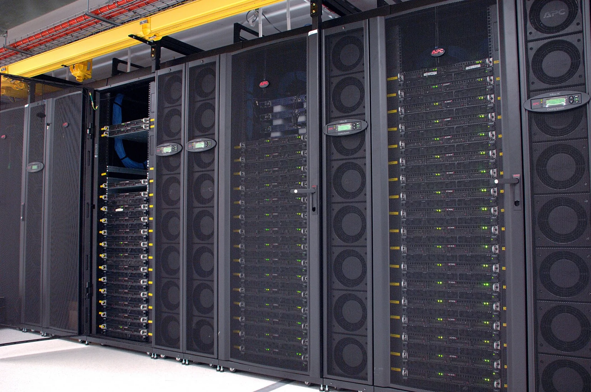

The invitation
Return to the developing civic-place exploration.
Explore →
This route is unavailable
Follow the complete page guide to the place, the programmes, the tools and the source library.
Aura Civic Establishment · Public planning site
CSIRO GPU cluster at a data centre, photographed on 19 April 2010.
Image credit ↗